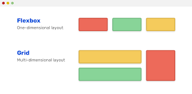

Flex Box

El Módulo de Caja Flexible, comúnmente llamado flexbox, fue diseñado como un modelo unidimensional de layout, y como un método que pueda ayudar a distribuir el espacio entre los ítems de una interfaz y mejorar las capacidades de alineación.
Cuando describimos a flexbox como unidimensional destacamos el hecho que flexbox maneja el layout en una sola dimensión a la vez — ya sea como fila o como columna. Esto contrasta con el modelo bidimensional del Grid Layout de CSS, el cual controla columnas y filas a la vez
MDN Web Docs. Tecnología para desarrolladores web. CSS. Diseño de caja flexible CSS. Conceptos Básicos de flexbox". Recuperado de
https://developer.mozilla.org/es/docs/Web/CSS/CSS_Flexible_Box_Layout/Basic_Concepts_of_Flexbox